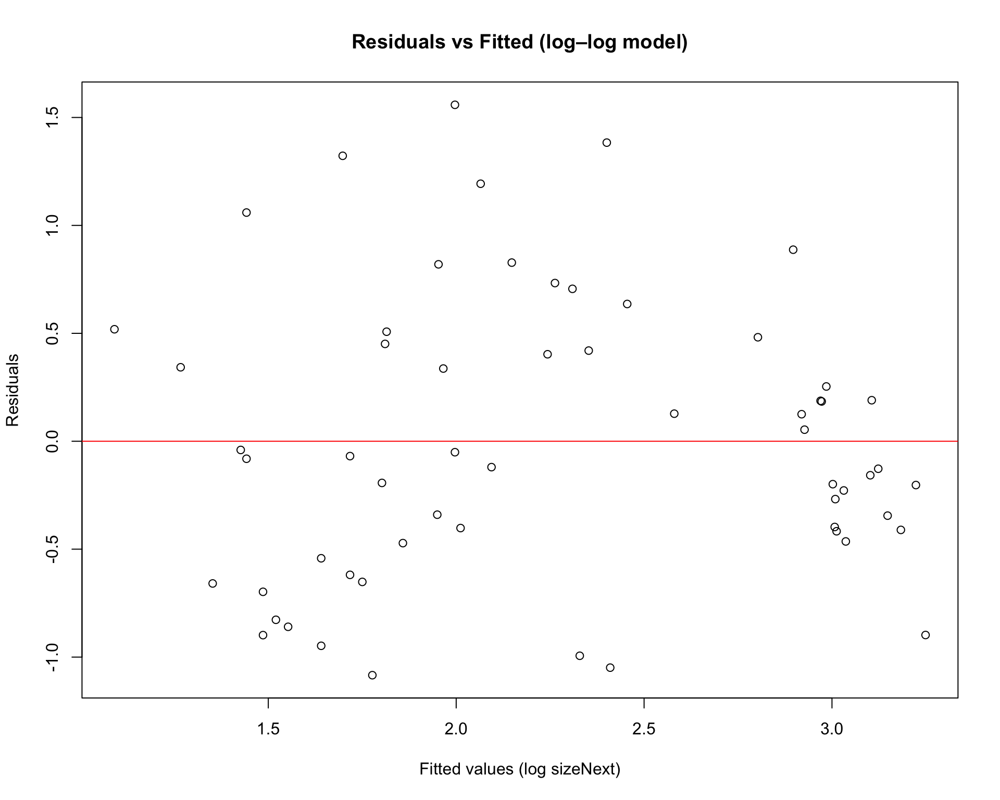

Chapter 15 Power analysis
15.2 Statistical power
As we learned in lesson 3, Basic Statistical Test, statistical power is a measure of making a Type II error - saying that there is no treatment effect when, in fact, there is one. A power analysis is a way of estimating statistical power to either speak to the ability of your experiment to detect treatment effects or estimate sample size needed to answer the question that you are interested in with your experimental design.
library(pwr)
library(tidyverse)
library(simr)
library(simglm)
library(Superpower)
#load data
data('oatvar', package='faraway')#Using power analysis to estimate needed sample size.
To conduct a power analysis, you will need to know: The number of groups in your study Significance level. It is standard to use a significance level of 0.05. The power required for your experiment, which is typically set at 0.8. Effect size, which can be calculated from data from a pilot study or estimated.
Effect size is a relativized estimate of difference between groups being compared. Generally, effect size is calculated by taking the difference between the two groups (e.g., the mean of treatment group minus the mean of the control group) and dividing it by the standard deviation of one of the groups.
Because effect size is converted to standard deviations units, it tells you how many standard deviations lie between the two means, and can be compared across datasets regardless of the original units of the study (which is why effect sizes are calculated for meta-analyses).
A classic effect size calculation is Cohen’s D calculated as \(\frac{\overline{x}_1 - \overline{x}_2}{s_{pooled}}\), where \({\overline{x}_1}\) is the mean of one group, \({\overline{x}_2}\) is the mean of the second group, and \(s_{pooled}\) is standard deviation (typically pooled; sometimes of the control or pretest data) calculated as \(s_{pooled} = \sqrt{\frac{sd_{a}^{2}+ sd_{b}^{2}}{2}}\). Note that Cohen’s D is one of many ways of calculating effect size. Two other metrics are used by the ‘pwr package’: \(f\), calculated as expected standard deviation of the group means divided by the pooled within-group standard deviation, is used in our example below. Another option is eta-squared (η2). The eta-squared is the proportion of the total variance explained by the means variance.
It is harder to detect a smaller effect of the treatment, and easier to detect larger effects. Cohen in his 1988 book (citation below) classified effect sizes into 3 general categories for Cohen’s D (CONFIRM): a small effect is typically set at 0.1 - 0.3, a medium effect at 0.3 - 0.5, and a large effect at > 0.5. Note that the range for small, medium, and large effects differ by effect size calculation Using these classifications, you can estimate the sample size for a proposed study even if you have no data.
Cohen, J. (1988). Statistical power analysis for the behavioral sciences (2nd ed.). Hillsdale,NJ: Lawrence Erlbaum.
Below, we will run a power analysis with actual data, but let’s start by running a power analysis to guide experimental planning for a study when no opportunity to conduct a pilot. Imagine you are planning an experiment in which you are trialing the effect of a new fertilizer on oat growth. You plan to include three levels, a control (no fertilizer added), a moderate fertilization treatment, and a high fertilization treatment and measure height as a dependent variable.
In the code below, k indicates the number of groups (here: control, moderate, high), f indicates an effect size (we selected a medium effect size), sig.level indicates the significance level (0.05), and power (standard to use 0.8). To calculate the number of groups, if you have two factors, simply multiply the number of groups in each factor to get the value k. For instance, say you are looking at the effect of 2 levels of pesticide and 3 temperature levels on bee longevity, you would multiply 2 * 3, yielding 6 groups.
Why do we use 0.8? It is by convention, much like we set a significance level (\(\alpha\)) of 0.05. At some point scientists agreed that a power level of 0.8, which means that the probability of rejecting a false null hypothesis is 0.8 (or 80%), is an acceptable risk of committing a Type II error.
##
## Balanced one-way analysis of variance power calculation
##
## k = 3
## n = 36.70126
## f = 0.3
## sig.level = 0.05
## power = 0.8
##
## NOTE: n is number in each groupIn this case, we’d should include at least 37 individuals (plus a few extra) to accommodate loss of individuals during the experiment.
When possible, it is preferable to run a pilot experiment in order to improve experimental design. The ‘pwr’ package in R allows you to run a power analysis on various forms of data. Let’s run through several quick analyses using the ‘pwr’ package. The effect size calculations will depend on your statistical test (for a full description of tests, go to the package).
Since Cohen’s description of effect sizes as small, medium and large depend on each statistical test, there is an easy way to generate this information in the ‘pwr’ dataset. For example, if you are interested in determining the value associated with a small effect size for a regression, you would run the following code:
##
## Conventional effect size from Cohen (1982)
##
## test = r
## size = small
## effect.size = 0.1Note that you have several test options here: r = regression r; alternative = ‘two.sided’ = correlation (can specify direction ‘greater’) - not 100 percent sure I’m right here… p = t = for t-test (type = ‘paired’; you can select between two population to a repeated measure test) anov = anova chisq = chi sq tests *f2 = glms
The ‘pwr’ package is nice for quick looks at power for simple analyses with no previous data. Note: that you can calculate effect sizes from data by hand and plug them into ‘pwr’ to generate sample sizes or power assessments.
Let’s check this out with the ‘oatvar dataset’.
ggplot(oatvar, aes(y=yield, x=block, color=variety)) +
geom_point() +
geom_line(aes(x=as.integer(block)))
The cbpp is a dataset on contagious bovine pleuropneumonia. Data description is here: https://rdrr.io/cran/lme4/man/cbpp.html
## herd incidence size period obs
## 1 1 2 14 1 1
## 2 1 3 12 2 2
## 3 1 4 9 3 3
## 4 1 0 5 4 4
## 5 2 3 22 1 5
## 6 2 1 18 2 615.3 Describing data
First, let’s take a spin with data description. We are starting here to introduce a few concepts that will be important to understand, as we launch into statistical analysis. We will start by describing continuous data.
Let’s use a simplified version of a dataset that I’m working with right now to look at the performance of several species of pollinator-friendly native species in agricultural gardens. Eventually, we’d like to develop seed to provide to restorationists for restoration of arid and semiarid grasslands. To do this, we need to understand how reliable these species are at establishing, producing seed, and attracting pollinators. Initially, we are conducting experiments with multiple populations of each species to determine how consistently plants grow, reproduce, and perform. Here, We will take a look at the initial heights of 1 population of one species, Asclepias subverticulata.
When doing an actual research write-up, I ask myself ‘What is the most important information for my audience to know about this dataset?’ to guide what descriptions of the data to include. Here, we are just going to play around with numbers and R code!
#create vector of heights (cm) of one population of A. subverticulata
sedonapopulation <- c(3, 3, 3, 3, 7, 8, 9)
#take the mean
mean(sedonapopulation)## [1] 5.142857## [1] 7.47619## [1] 2.734262#calculate standard error
#base r doesn't have this function
#so we have to write our own
std_error <- function(x) sd(x)/sqrt(length(x))
std_error(sedonapopulation)## [1] 1.033454Most of the time when writing up results, you present a mean (sum of numbers divided by the number of observations), and an estimate of variation (a measure of how different the observations are). Here, we calculated three estimates variation, variance, standard deviation, and standard error.
Since you will occasionally need to include equations in your write-ups, let’s get use to mathematical syntax, with these simple examples.
The formula for the sample mean is: \(\mu = \frac{\Sigma x_i}{n}\); where \(\mu\) indicates the sample mean (sample = group of numbers we are looking at); \(\Sigma\) means to add what ever follows; \(x_{i}\) is the value of one observation; (subscript i is often used to indicate that the action should be repeated for all values); \(n\) is the number of observations
Why didn’t we just use \(\bar{x}\) to indicate the mean? Because statisticians typically use \(\bar{x}\) to indicate the true mean of the population, and \(\mu\) to indicate the sample mean!
Just to show you, what the mean() function is doing, let’s run:
sum = 3+3+3+3+7+8+9 #add all the numbers in the sample
n = length(sedonapopulation) #or you can just calculate the number of height measurements
mean = sum/n; mean #divide sum by number## [1] 5.142857This formula is simple, but sometimes with more complex formulas, I will solve the equations by hand, to make sure that I understand what is happening!
The formula for variance is: \(S^{2} = \frac{\Sigma(x_i - \mu)^{2}}{n - 1}\) where \(S^{2}\) is the sample variance; \(\mu\) is the sample mean (remember from above); \(x_{i}\) is the value of one observation; \(n\) is the number of observations
In other words:
#We determine how much each observation varies from the mean.
diffobs1 = mean - 3
diffobs2 = mean - 3
diffobs3 = mean - 3
diffobs4 = mean - 3
diffobs5 = mean - 7
diffobs6 = mean - 8
diffobs7 = mean - 9
#Then we square each of these.
diffobj1_sq = diffobs1^2
diffobj2_sq = diffobs2^2
diffobj3_sq = diffobs3^2
diffobj4_sq = diffobs4^2
diffobj5_sq = diffobs5^2
diffobj6_sq = diffobs6^2
diffobj7_sq = diffobs7^2Why do we square the differences rather than just adding them up? Because differences will be positive and negative. If we added them without squaring, sample differences would negate each other. We want an estimate of the absolute differences of samples from the mean.
#Then we add the differences up.
sumofsquares = sum(diffobj1_sq, diffobj2_sq, diffobj3_sq, diffobj4_sq, diffobj5_sq, diffobj6_sq, diffobj7_sq)
#Divide the sum of squares by n - 1.
variance = sumofsquares/(n-1); variance ## [1] 7.47619Why n - 1 instead of n?
One reason is that, theoretically, because we are taking the mean of a sample, rather than all individuals, we underestimate the variance, so taking n-1 corrects that bias. Consider it a penalty for measuring a sample, not the entire population! Another practical reason is that dividing by n-1 makes the variance of a single sample undefined (unsolvable) rather than zero (solvable)
For standard deviation, we just take the square root of the variance, to remove the effect of squaring the differences when calculating the variance, and thus contextualizing our estimate of variation with regard to the mean. For example, the variance for the Sedona population is 7.48, larger than the sample mean of 5.12; while the standard deviation is 2.73, indicating that you would expect most observations to be 5.12 +/- 2.73 (we’ll get to quantiles in a minute).
The formula for standard deviation is: \(\sigma = \sqrt\frac{\Sigma(x_i - \mu)^{2}}{n - 1}\) where \(\sigma\) is the sample variance; \(\mu\) is the sample mean; \(x_{i}\) is the value of one observation; \(n\) is the number of observations.
Finally, standard error and confidence intervals (we’ll get to confidence intervals later) are the most common metrics of variance presented in journals.
The formula for standard error is: \(SE = \frac{\sigma}{\sqrt n}\) where \(SE\) is standard error of the sample; \(\sigma\) is the standard deviation; and \(n\) is the number of samples.
Why do we divide the standard deviation by the square root of the sample size to get standard error?
While standard deviation measures the variation of the sample, standard error is meant to estimate the variation of the entire population of samples, if we could measure all individuals accurately. By dividing by the \(\sqrt n\), the larger the sample size, the lower the error, because you have a more complete estimate of the true mean. In other words, standard deviation is just a measure of the variation of our sample, while standard error also incorporates information about our sampling process (how many individuals we have sampled). Want to delve deep into standard error and deviation (me neither - ha)?: Google central limit theorem + standard error / standard deviation.
Means and variance measures are the most common way to describe quantitative data. However, several other metrics are useful for understanding the nature of your data and making decisions about analyses. A comprehensive understanding of your dataset includes describing these four features:
Location (Mean, Median) Spread (Variability) Shape (Normal, skewed) Outliers
We’ve talked about means. The median is just the central number in the dataset, and helps you identify skewness.
#an example of an unskewed population
sedona_unskewed <- c(1, 2, 3, 4, 5, 6, 7)
mean(sedona_unskewed)## [1] 4## [1] 4#previous sedona population; skewed
sedonapopulation <- c(3, 3, 3, 3, 7, 8, 9)
mean(sedonapopulation)## [1] 5.142857## [1] 3In an unskewed population, the mean will equal the median. Skew may not seem important, but it has statistical ramifications, AND it tells us something meaningful about the data. For instance, what if I said that mean price of a home in Flagstaff is 350K, but the median price of a home is 300K? We would know the that average house prices are driven up by a smaller number of expensive homes.
We can quantify skew by comparing means and medians (mean > median = right-skewed; median > mean = left-skewed), but it is helpful to visualize the shape of data with a histogram. A histogram is a graph of the frequency of different measurements.
Let’s add a few more observations to our Sedona populations (skewed and unskewed) and check out the look of the data!
sedona_unskewed <- c(7, 2, 2, 3, 3, 3, 3, 6, 6, 5, 5, 5, 5, 4, 4, 4, 4, 4, 4, 0.5)
mean(sedona_unskewed)## [1] 3.975## [1] 4#I'm renaming sedonapopulation, sedona_skewed for this example
sedona_skewed <- c(3, 3, 3, 3, 7, 3, 4, 5, 6, 3, 3, 3, 4, 4, 6, 7, 8, 9, 3, 4, 5, 2)
mean(sedona_skewed)## [1] 4.454545## [1] 4
In this relatively unskewed example, the tails are approximately even. This shape is also referred to as a normal or Gaussian distribution.
 Here, we superimposed the bellshaped Normal or Gaussian distribution.
Here, we superimposed the bellshaped Normal or Gaussian distribution.
 In this example of skewed data, the tail tapers to the right, indicated that the data is skewed to the right.
In this example of skewed data, the tail tapers to the right, indicated that the data is skewed to the right.
In order to explain outliers, we need to look at quantiles! Quantiles are proportions of your data, in other words a way to break your data into chunks to understand spread. You can break your data into as many quantiles as you would like, but it is most common to break your data into 4 parts, also called quartiles. (If you break data into 5 parts, the components are called quintiles, 10 parts = deciles, 100 parts = percentiles).
When you break data into quartiles, roughly 25 percent of the data occurs within each data chunk. The first chunk of the dataset contains 25% of the data (25th percentile; 25% of the data fall at or below this cut-off) is called the first quartile, the 50th percentile is called the sample median or the second quartile, the 75th percentile is called the third quartile.
Box and whisker plots are commonly used to quickly examine quartiles. Let’s check out our plant height data again, using a box and whisker plot.
 In the plot shown here, the box encapsulates the Interquartile Range (IQR); the center of the data ranging from the 25th percentile to the 75th. The black line in the middle of the box is the median (also called the 50th percentile, because it bisects the dataset; half of the data occur above the median and half below). The lines emerging from the box (whiskers) indicate the extent of the first and third quartiles, and usually corresponding with the minimum and maximum values of the dataset, unless there are outliers. An outlier is a datapoint that occurs outside of the 1st or 3rd quantile. Let’s add one to our Sedona dataset, and see how it is represented on the box and whisker plot.
In the plot shown here, the box encapsulates the Interquartile Range (IQR); the center of the data ranging from the 25th percentile to the 75th. The black line in the middle of the box is the median (also called the 50th percentile, because it bisects the dataset; half of the data occur above the median and half below). The lines emerging from the box (whiskers) indicate the extent of the first and third quartiles, and usually corresponding with the minimum and maximum values of the dataset, unless there are outliers. An outlier is a datapoint that occurs outside of the 1st or 3rd quantile. Let’s add one to our Sedona dataset, and see how it is represented on the box and whisker plot.
#Let's add a plant height of 20.
sedona_skewed <- c(3, 3, 3, 3, 7, 3, 4, 5, 6, 3, 3, 3, 4, 4, 6, 7, 8, 9, 3, 4, 5, 2, 20)
boxplot(sedona_skewed, main="Skewed", ylab="Plant height (cm)") The outlier appears as a dot on the box and whisker plot, and is the maximum value of the dataset.
The outlier appears as a dot on the box and whisker plot, and is the maximum value of the dataset.
One other thing to note: Standard deviation also breaks data into meaningful segments, but is only used when data conform to a normal distribution; the mean +/- 1 SD accounts for 68% of the data, +/-2 SDs contains 95% of data, and +/- 3SD includes 99% of data. That said, I’ve never presented standard deviation in a manuscript; it is much more common to include standard error or confidence intervals (discussed later).
We’ve played around a lot with data, but what do you actually need to take away from this?:
Data types (Categorical, Numerical discrete, Numerical continuous, Ordinal) Why? We will select analyses based on data type. The two basic questions that most statistical analyses answer. Why? This will help you define what statistics can and can’t do and bound our learning space! Ways to describe numerical continuous data (Location, Spread, Shape, Outliers). Why? You will describe your results using these concepts in write-up AND these concepts will be important for certain analyses. Know how to calculate mean, median, and standard error. Why? These are typical ways to describe data in results sections. Start to familiarize yourself with mathematical annotation. Why? You may need to include equations in your methods section. Start to familiarize yourself with R code. Why? Most researchers now use R to analyze, describe, and visualize their data. *Be able to interpret a histogram and box-whisker plot. Why? These are commonly used ways to visualize data.